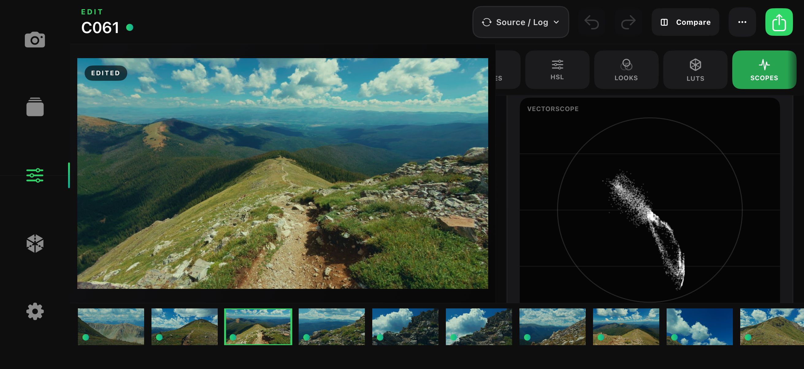
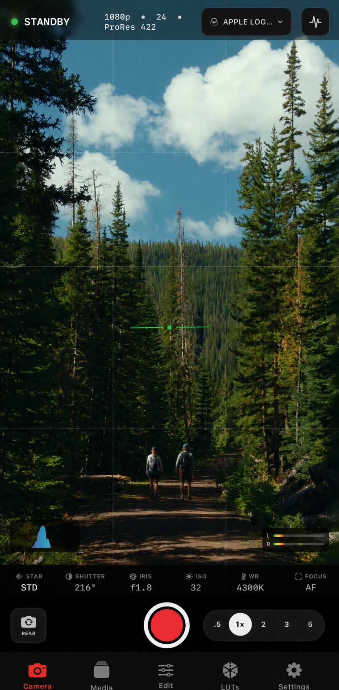

CHROMIS FOR IPHONE
Chromis
A focused iPhone filmmaking app for recording, reviewing, and color grading clips in one workspace.

Capture in Apple Log, organize takes, grade the look, and export without switching apps.
CAMERA
Manual camera control.
Chromis keeps capture settings, monitor assists, storage behavior, and recording state visible without burying the image.

EDIT
Grade the shot.
Dial primaries, crop, curves, HSL, looks, scopes, and output color without leaving the project.

WORKFLOW
From set to share.
Capture
Set codec, resolution, frame rate, dynamic range, audio, monitor assists, and tracking.
Review
Browse clips, inspect metadata, favorite takes, and send any shot directly into Edit.
Grade
Build reusable looks with primaries, curves, HSL, crop, and scopes.
Export
Render the edited clip and save or share it from the same workspace.
CHROMIS
Shoot with intent.
Built for solo shooters and small teams who want a cleaner path from capture to finished color.